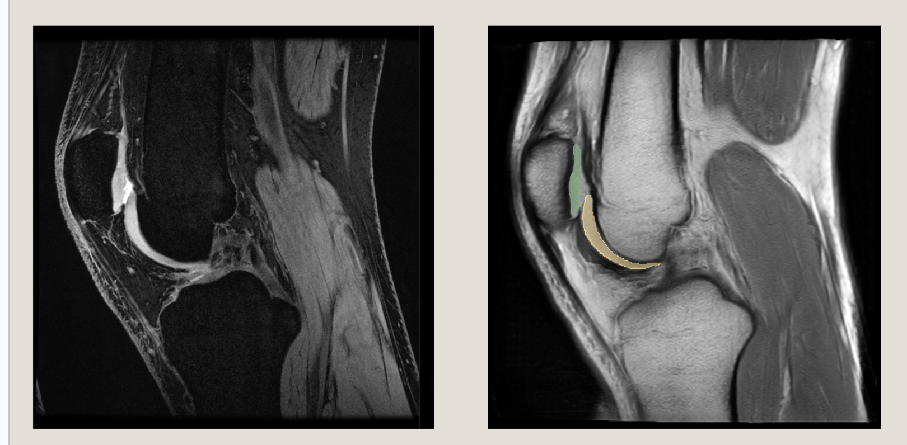
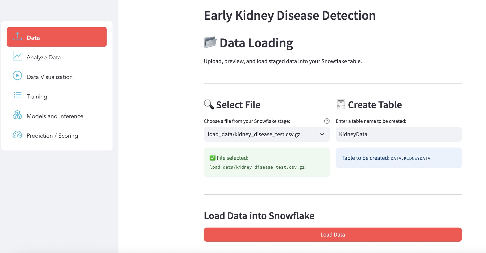
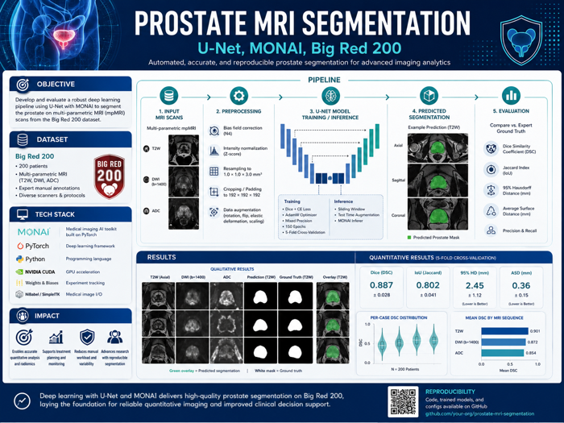
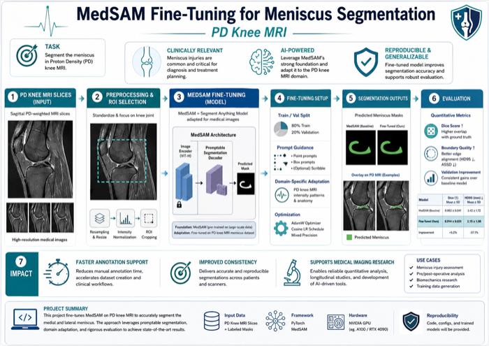
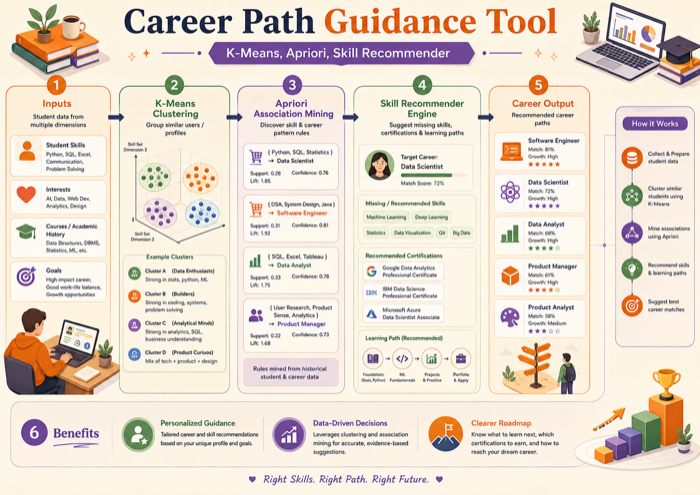
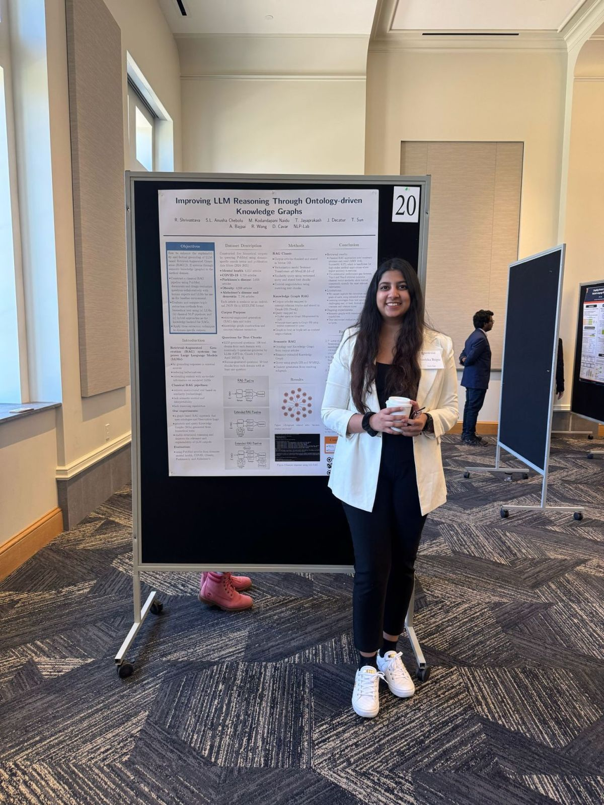
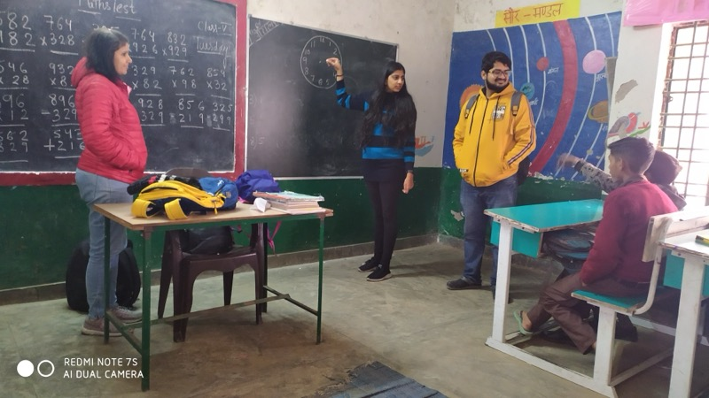
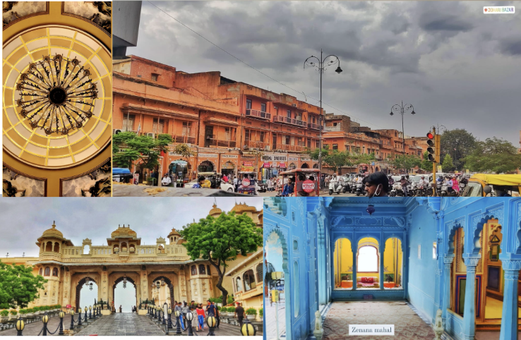
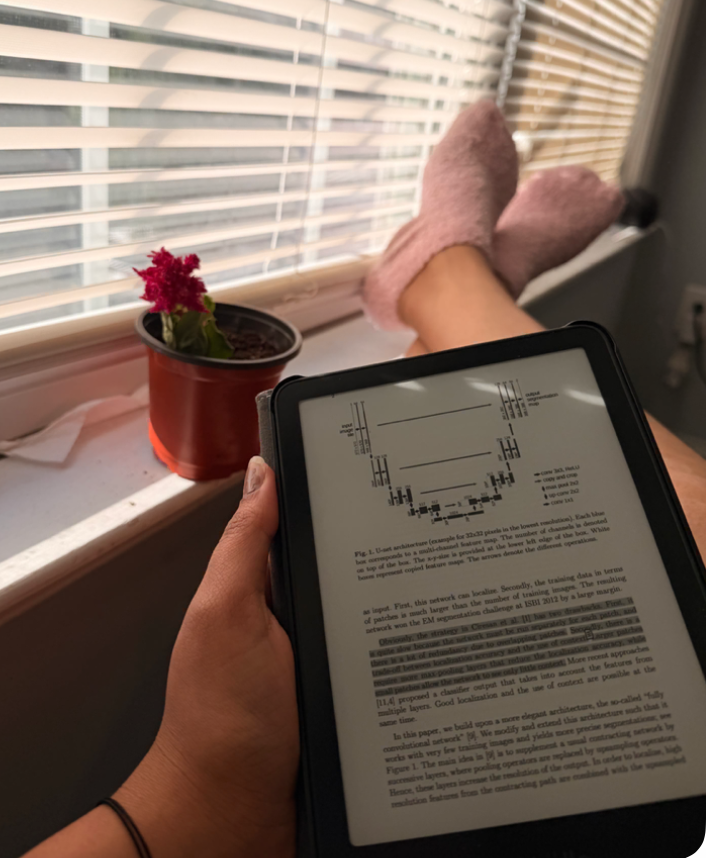
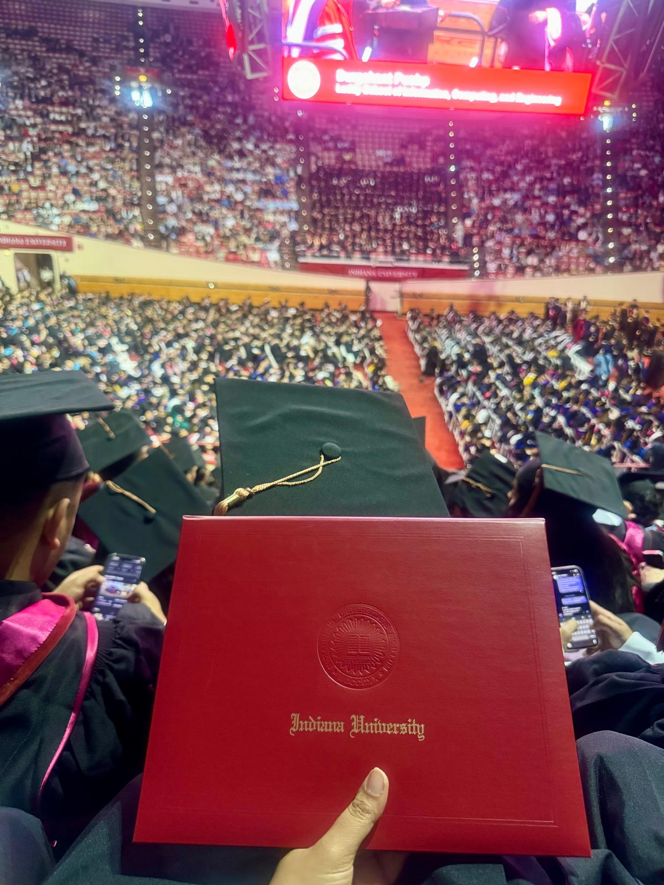

A pitch, hand-delivered · Issue N° 01
Healthcare data. AI that ships. Pipelines that don't break at 2am.
Can I start Monday? Kidding. Unless you want me to 😄 (you know why.)
Photograph: Anshika Bajpai
N° 02: About this page
I built this the same day we talked, using AI to move fast, because I wanted to show you more than a resume can. Everything below is real: real metrics, real projects, real proof. No filler.
Why I'm excited: why I'm a fit
I've moved across payer-side healthcare systems, security infrastructure, and generative-AI research, picking up whatever data stack each environment needed along the way. That's the muscle ABI frameworks needs: rigorous pipelines, clean SQL, and knowing when to trust a model and when not to. I want to build that with you next.
(Swap this for your own specific "why ABI" reasons from the call before sending.)
N° 03: Stack
Python · SQL / PostgreSQL · Google Cloud Platform · BigQuery · Snowflake · Data Pipelines & ETL · Artificial Intelligence · Machine Learning · Healthcare Data · End-to-End Ownership · Fast-Paced Delivery · Leadership · Detail-Oriented / Perfectionist
N° 04: Strengths
Not buzzwords: how I actually operate.
Detail-oriented, borderline perfectionist. I'd rather ship it right than ship it twice.
Every pipeline, model, and dashboard I've built traces back to someone who actually uses it.
I can go deep on the technical stuff and still be someone you'd want on your team.
I can explain a model to an engineer and to a director in the same afternoon.
Not because a title said so - I've mentored, led projects, and owned outcomes since day one.
New paper, new framework, new agent pattern - I want to try it. (Yes, I read research papers on my Kindle. In bed. It's a whole thing.)
N° 05: Experience
Jun 2021 – Jun 2024 · Optum, UnitedHealth Group
Proof: Director's note - drop screenshot in images/proof-optum-recognition.jpg
May 2025 – Aug 2025 · Palo Alto Networks
Jan 2026 – Present · AIMed Lab, Indiana University

RegGAN result
N° 06: Proof
Every project below has real data, real code, real results.

Snowpark · SQL
End-to-end pipeline on Snowflake Snowpark. 6 ML models compared, class imbalance handled.
View Code →
U-Net · MONAI
Dice score 0.415 → 0.774. Supports cancer-detection workflows.
View Code →
MedSAM · PyTorch
Mean validation Dice 0.79. Foundation model adapted to a tiny clinical dataset.
View Code →
K-Means · Apriori
Proof I actually know data mining, not just deep learning. Clustering + association rule mining on skill data.
View Code →
Poster · IU Speech Days
Presented "Ontology-Driven Knowledge Graphs for Medical RAG" at Midwest Speech & Language Days, IU Bloomington.
[Drop your product-owner's LinkedIn recommendation quote here - proof you can communicate, present, and work cross-functionally, not just write code.]
- Product Owner, LinkedIn Recommendation · swap screenshot into images/linkedin-recommendation.jpg
N° 07: Demo
BandageBoard: a mini hackathon project that turned into a great conversation starter.
Next.js · TypeScript · PostgreSQL · Anthropic SDK
N° 08: Beyond work

Community, on purpose
Education & Cultural Team Head, National Service Scheme

Photography, and always a book going
A few of my own shots above, plus whatever book is currently keeping me up too late

Yes, I have hobbies
Board games, the outdoors, and books that keep me up too late
N° 09: Education
Aug 2024 – May 2026 · GPA 3.94
Jul 2017 – May 2021
🎓 Graduated, available immediately

Thanks again for your time - happy to dive deeper into any of this.